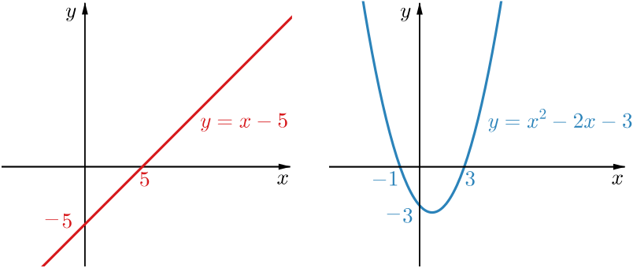
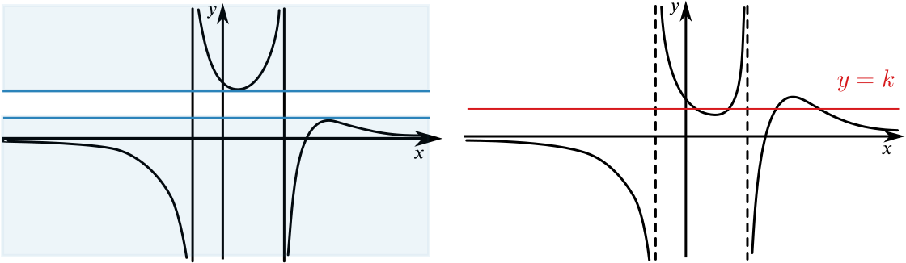

None of the following sketches is an accurate graph of the function f(x)=x−5x2−2x−3.
But which of these could be a sketch graph of f(x)? Try to explain why some of the sketches can’t represent this function.
We will discuss how thinking about various questions can help us to decide which graphs could or could not be y=f(x). You might have considered some of these questions, but perhaps in a different order, or you may not have needed to consider all of these points. There are connections between some of the questions, but we will not assume that graphs have been eliminated at any previous stage, so the sections can be read in any order. You might find it helpful to have the graphs in front of you as you read.
To get started it may be helpful to think about the graphs of the functions in the numerator and denominator of f(x) and consider how the behaviour of these functions determines the behaviour of f(x).

We can’t divide by zero, so we know we that f(x) is not defined for values of x which make the denominator zero. The quadratic in the denominator can be factorised as (x+1)(x−3), which means that f(x) is not defined when x=−1 or when x=3. For values of x close to −1 or 3, the value of the denominator is very close to 0 but the value of the numerator is not close to 0. This means that f(x) will either be very large and positive or very large and negative, so the graph has vertical asymptotes with equations x=−1 and x=3. This eliminates Graphs C and H from the possible graphs for f(x).
It may be tempting to eliminate Graph A because it doesn’t look as if the equations of the asymptotes could be x=−1 and x=3. However, we don’t have any scale on a sketch graph so we can’t draw conclusions based on distances.
Since we know the graph of f(x) has vertical asymptotes, we can think about whether f(x) always changes sign at these asymptotes, like the function in Graph G, or whether the sign can be the same on either side of an asymptote, like the function in Graph B.
Our function, f(x), is defined when x=0 and f(0) gives us the y-intercept. This tells us that the graph passes through the point with coordinates (0,53), which eliminates Graphs A and B.
The numerator of f(x) is only zero when x=5, so the equation f(x)=0 only has one solution. Therefore there is one x-intercept. This eliminates Graphs A, C, and H.
We now know that the graph meets the x-axis where x=5 and nowhere else. Does this mean the graph crosses the x-axis when x=5, or might the x-axis be a tangent to the graph at the point where x=5?
It might be useful to think about whether f(x) is positive or negative when x is close to 5.
The graph of f(x) has vertical asymptotes with equations x=−1 and x=3 which means the vertical asymptotes are to the left of the x-intercept at x=5. This means that only Graphs D, E, or G could be sketches of f(x).
In Graphs D, E and G it may seem unsettling that the asymptote x=3 and the x-intercept are quite close together. When sketching we might try to suggest something about relative distance, but when interpreting a sketch we can only say for sure whether intercepts and asymptotes occur to the left or right of each other. For example, an unlabelled sketch of y=f(x) could look very similar to a sketch of y=x−4x2−2x−3 or y=x−17x2−2x−3; we would only expect to distinguish between the graphs if they were drawn on the same axes.
If we sketch or look back at the graphs of y=x−5 and y=x2−2x−3, we can see that for large x, the y-value on y=x2−2x−3 is growing more rapidly than the y-value on y=x−5. This means that as x gets larger, the value of the denominator in f(x) is getting larger more quickly than the value of the numerator. Therefore f(x) gets closer to 0 as x gets very large, so the x-axis is a horizontal asymptote. What happens when x is negative and moves further away from 0?
Thinking about these questions has helped to eliminate Graphs C, E and H.
The value of f(x) will be positive if x−5 and x2−2x−3 are both positive or both negative. By sketching or looking at the graphs of both of these functions, we can see that f(x) is positive for −1<x<3 and for x>5. This means that Graphs C, D, G or H could be graphs of f(x).
Which sketch graph do you think is the best representation of this function?
The ideas above have reduced the problem to deciding between these two possible graphs for f(x).
Graphs D and G
We need to decide which of these two graphs gives a better representation of f(x). A critical difference between the two graphs is that in Graph D there are some y-values that cannot be obtained as outputs from the function, whereas in Graph G there are some y-values that are given by four different x-values.

In the right-hand graph above, y=k has been drawn so that it meets the graph of the function in four different places. To find the x-coordinates of these points, we could solve x−5x2−2x−3=k.
Why can’t this equation have more than two solutions?
We have used the quadratic nature of the equation f(x)=k to show that a feature of Graph G cannot occur. We could also use what we know about quadratics to show that there are some y-values that cannot be obtained as outputs from f(x).
We could use the discriminant to identify a range of values of k for which the equation x−5=k(x2−2x−3) has no real solutions. Alternatively, we could compute values of f(x) to try to find a value, such as 12, that doesn’t seem to occur as f(x) for any x. Then try to prove that x−5=12(x2−2x−3) has no real solutions.
Once you have decided which graph(s) could represent this function, try to label key features, such as points where the graph crosses the axes. You could also try to sketch a graph that you think is a bit more true to the function than these graphs.
This sketch is slightly more true to the function f(x) but shares most features with Graph D. One striking difference is that the maximum or ‘peak’ to the right of the x-intercept is much less pronounced than in Graph D. (Its coordinates could be found using the discriminant, as suggested above.) Sketch graphs tend to exaggerate features such as peaks and asymptotes to make this behaviour clear, even if a graph approaches an asymptote very slowly.